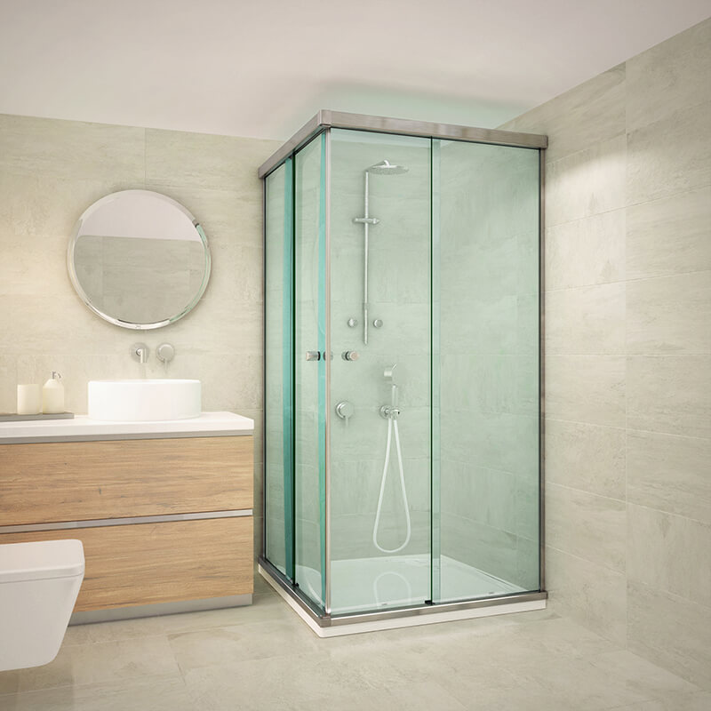

Nuestros Proyecto
A lo largo de los años, hemos trabajado en una variedad de proyectos, desde la instalación de vidrios, espejos y mamparas en hogares para la creación de espacios comodos y unicos. Nos enorgullece ofrecer soluciones personalizadas que se adaptan a las necesidades y gustos de nuestros clientes.
A continuacion podras ver algunos de nuestros proyectos realizados, donde podrás apreciar la calidad y el detalle que ponemos en cada uno de ellos.
 \
\

